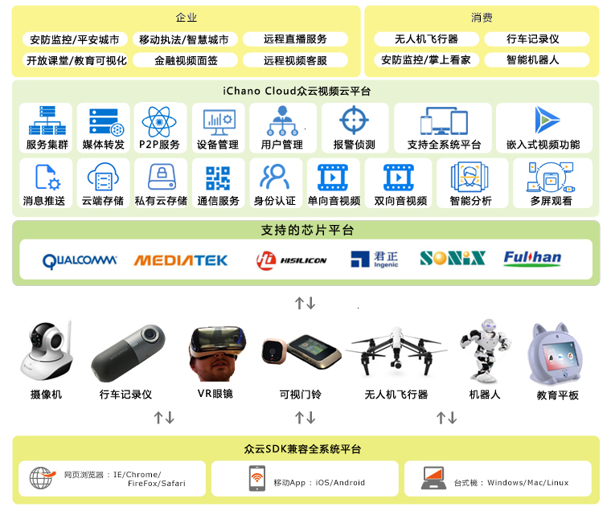

随着物联网与视频云服务的普及，越来越多的传统安防监控设备厂商开始为家庭和商铺用户提供移动视频监控业务。 消费者仅需购买支持手机视频连接的摄像头就能在有网络的情况下随时随地的进行视频访问，很多企业也将移动视频监控作为可视化管理的重要项目进行采购部署。近三年来，智能家居，车联网与可穿戴设备近距离的接触到人们的生活，也拉开了智能硬件舞台的序幕，越来越多的智能硬件都集成了高分辨率的摄像头，为消费者与企业用户提供视频流媒体应用服务。
2013年“掌上看家”作为全球首款支持全终端操作系统平台的视频监控云服务APP正式上市，在不到两年的时间就积累了近千万用户粉丝支持。良好的用户体验、强大的音视频应用以及稳定的视频连接服务一直被广大用户予以好评。
据艾瑞咨询发布的《中国智能硬件产业系列研究报告》显示，2015年我国智能硬件市场规模达到424亿，2016年将突破500亿规模，在这块持续增长的蓝海市场中，“掌上看家”视频云服务商南京云恩通讯科技看准了智能硬件视频连接服务市场，并加大研发投入推出了面向智能硬件市场的视频连接SDK业务——iChano众云视频开放平台，该平台以领先业界的视频连接技术及云端存储与视频分析服务串接各种智能硬件，优异性是可横跨各类操作系统（Windows, Mac OSX, iOS、android、Linux），并支持高通、MTK联发科、海思、富瀚、君正MIPS、松翰的芯片平台，再以灵活而有弹性的功能模块化服务，对企业型客户或消费型电子产品客户可提供定制化音视频解决方案，各种智能硬件透过iChano众云视频开放平台实现智能连接与云端应用服务。
在短短的半年内，iChano众云视频开放平台先后与中兴通讯、TCL、乐视、富瀚微电子、中国移动、中国联通、台湾群晖、英安特及菲律宾最大的运营商PLDT建立了深度战略合作，合作的产品领域覆盖芯片方案、机顶盒、监控摄像头、无人机、行车记录仪、可视门铃、电子猫眼、家庭机器人等。iChano众云视频开放平台为开发者和智能硬件厂商提供可靠的技术支撑、运营服务以及市场资源，对于开发者和创业者，iChano众云视频开放平台的主要职责是帮助开发者快速商业变现、产品迭代、运营推广、搭建技术分享和交流平台。
回归到技术层面的研发支持，iChano众云视频开放平台市场总监胡珏锋介绍：“总体来说，采用iChano众云视频开放平台提供的视频连接SDK产品进行产品开发，一方面会简化开发流程，使智能硬件厂商的产品能快速商业化市场化，另一方面就是形成了一种开发标准，从而大幅降低开发时间和成本，这也是使用iChano众云视频开放平台SDK产品开发的好处。iChano众云视频开放平台提供便利的SDK接口，研发单位的人才可以度高复用、人员投入成本低、效果体验好。”从iChano众云视频开放平台提供的开发者调研统计数据显示，到2016年底，采用iChano众云视频开放平台SDK产品开发的厂商预计达到上千家。
2016年2月，iChano众云视频开放平台又做了一件令业内同行为之震惊的事，就是将拥有千万用户的“掌上看家”APP开源了，硬件厂商和项目开发者不用自行从零开发视频APP，用“掌上看家”开源的APP简单修改就可以上线，其目的是帮开发者扶上马再走一程，支持更多创业公司与初创型研发企业减少软件研发投入与人员成本。面对庞大的App开发市场，一家公司很难独霸，开源与开放的机制是社区、平台或者是软件服务商发展壮大的重要前提之一，iChano众云视频开放平台通过技术上的不断迭代和产品优化，为开发者提供持续的技术支持，一起做强做大。
开发者网站：http://zvcloud.com
开源的Github连接地址：https://github.com/OpenIchano
原创文章转载请注明：www.zvcloud.com